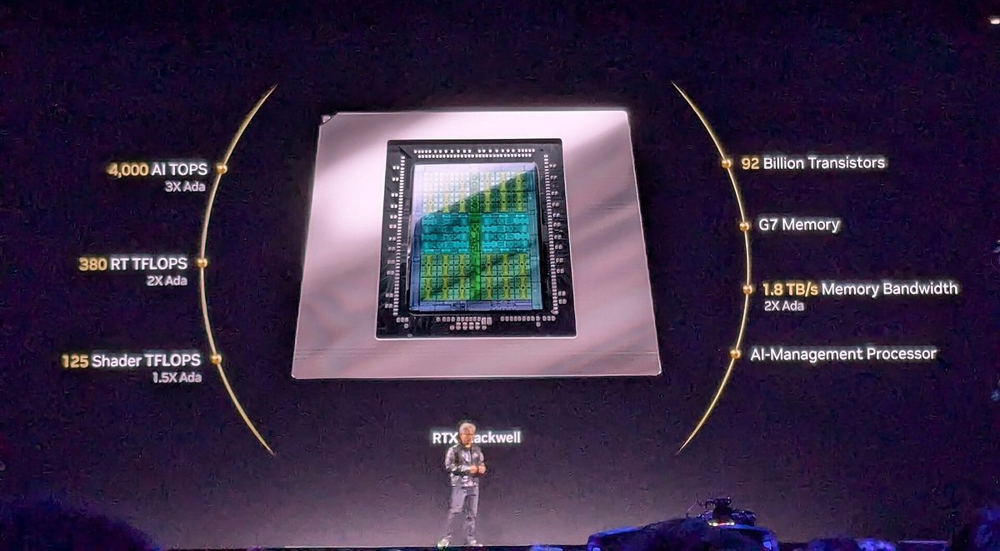

Huang says he would return; the board shuts the door on a record quarter
The founder's statement drew a wave of support from the list. The board answered on the earnings call, and Washington set dates for Huang to explain himself.
Huang's statement @JensenHuang · former CEO, Nvidia
Huang posted the statement at 11:18am EST. It thanked supporters, said he had made "serious mistakes in my personal life," and pledged to cooperate with the board's independent investigation.
The list answered quickly. Paul Graham wrote: "Imagine being a board member at Nvidia considering potential candidates for CEO, and trying to claim with a straight face that one of the others would do a better job." David Heinemeier Hansson said Huang's return "is not just in the best interest of NVIDIA, but the world," and told the board to get moving: "Chop chop!" Tobi Lütke added: "His return to NVIDIA is in all of our best interest." Jim Fan, who leads robotics research at Nvidia, wrote that backing Huang "is the least I can do for Jensen, who showed me the future before it arrives." Palmer Luckey replied "Jensen the White," and Sam Altman, Aaron Levie and Guillermo Rauch answered with emoji.
"Since my departure, I've seen an outpouring of calls from NVIDIA's employees, investors, business partners, and customers for me to return as CEO. Many continue to reach out to me directly as the company navigates complex technology, market, competitive, and geopolitical dynamics. NVIDIA is a once-in-a-generation company. If the Board of Directors decides that my return is in the best interest of our shareholders, our employees, the company, and America, I would be honored to answer these calls and return as CEO."


.jpg){kind=link}
The quarter Nvidia's board and results
The answer came at the start of the earnings call. "The Nvidia board unanimously accepted his resignation and does not intend to reinstate Jensen as CEO," chairman Harvey Jones said, Politico reported. Kress is running the company while a permanent chief executive is sought, the AP reported. Late Tuesday, Semafor reported that a faction of board members is still pushing for Huang's return, according to people familiar with the matter.
The numbers did not suffer. In the quarter ended Oct. 25, Nvidia's results show revenue of $115.8 billion, up 20% on the quarter, and data center revenue of $107.6 billion, up 110% on the year. Net income was $65.3 billion, and the gross margin was 74.8%. Earnings were $2.68 a share on an adjusted basis, against $2.48 expected, and revenue beat the $109.10 billion consensus, CNBC reported from LSEG data. The current-quarter forecast of $130.0 billion, plus or minus 3%, assumes no data center compute revenue from China. "Our momentum is real," Kress said.
Nvidia also returned $28.1 billion to shareholders in the quarter and has about $227.3 billion left under a buyback authorization it raised by $150 billion in September. Tim Sweeney objected: "Just think of what NVIDIA could do if they invested $150 billion back into their business in America. ... But nope, they're buying back shares instead."
Megaspeed and Congress @jgebbia · co-founder, Airbnb · @TimSweeneyEpic · CEO, Epic Games
The Commerce and Justice departments issued a joint statement on Megaspeed, the Singapore company at the center of the scandal. Commerce opened an export-control investigation in 2024, Nvidia put Megaspeed on its "no sell" list in June 2025, and the Justice Department then took the lead on a criminal investigation. Gebbia summed it up as "2 year investigation, nothing found," but the statement describes the criminal case as ongoing.
Three House committees announced that Huang will appear on Dec. 1 and Nvidia general counsel Tim Teter on Dec. 2, both for transcribed interviews, about "the role of a potential Chinese intelligence asset in this scandal." Sweeney welcomed it: "This is a good and proper process. Let the facts come out transparently in sworn testimony to our elected representatives."